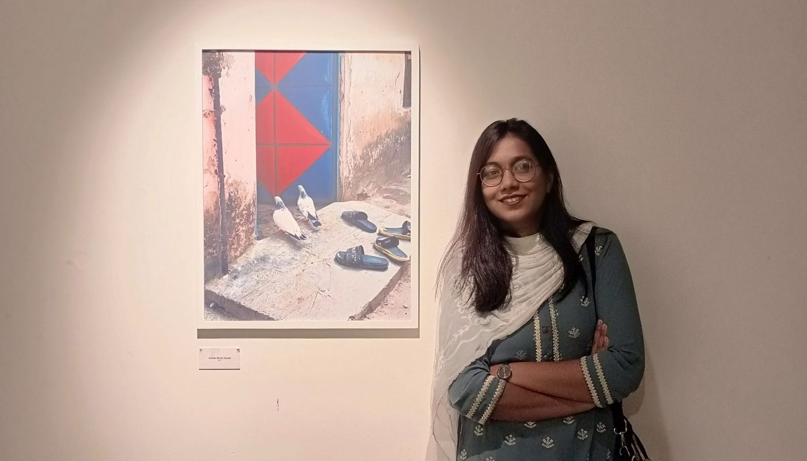
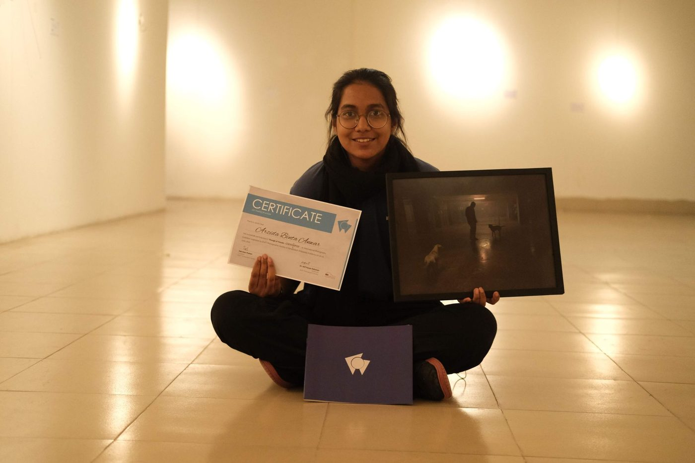
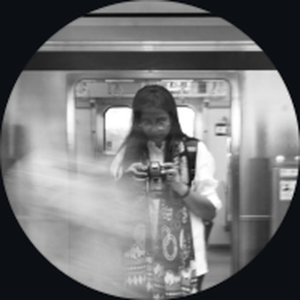
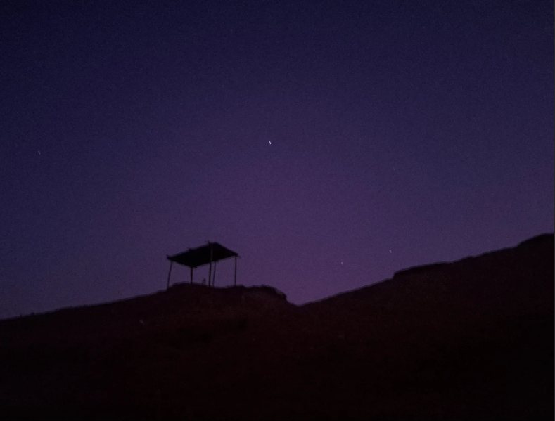
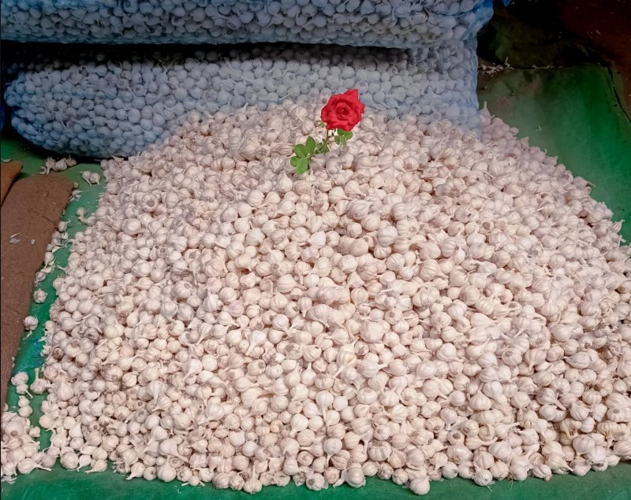
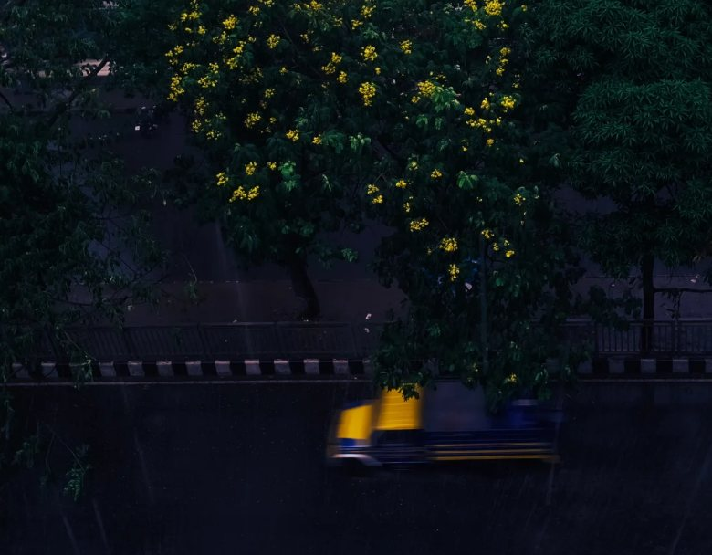
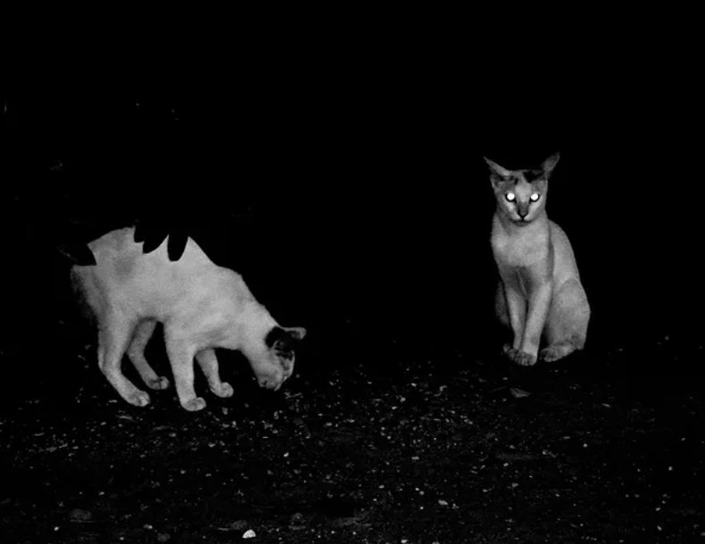
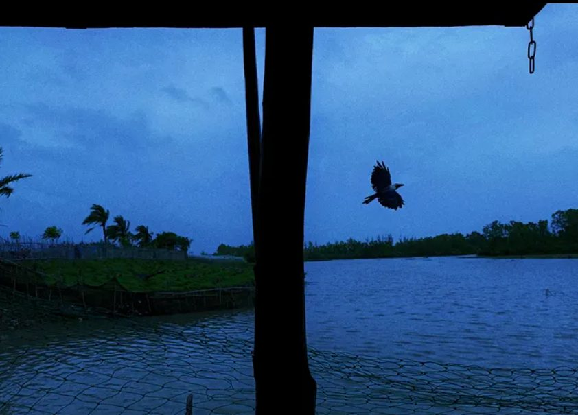

Photography
Photography is, for me, a way of slowing down and noticing. I like looking at the little things: the light, a fleeting expression, an interesting corner, a moment that somehow feels worth remembering. Sometimes a photograph is simply about what I see, sometimes it is more about what I feel.
Some of my photographs have been selected and exhibited in photography exhibitions, and seeing a print of mine framed on a gallery wall remains one of my favourite feelings.


Find me on Instagram

arzida_orchi
Arzida Binta Anwar · Photography




